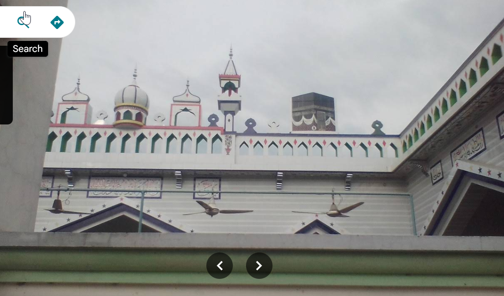

Gumtala is a well-known town and Union Council in Tehsil Shakargarh, located within the Narowal District of Punjab, Pakistan. Situated with a postal code of 51800 the town is bordered by nearby villages like Gumtali and Manka
Welcome
Gumtala is a village of narrow lanes, wheat and rice fields, and a settlement that has grown up around its mosques, school and football ground. This site is a starting point for its story — replace the placeholder details with the village's own history, numbers and voices.
Edit this paragraph in about.html with the real founding history and any figures you want to share.Landmarks
Two mosques, a school and a football ground anchor daily life in Gumtala.
A central mosque near the heart of the settlement, marked by its tall minaret and white domes.

Known for its painted arches and ornamental domes, on the village's eastern side.
Serving the boys of Gumtala and the surrounding area with primary and secondary classes.
Community
Placeholder entry — replace with real match dates and details on the news page.
Placeholder entry — replace with real health unit announcements.